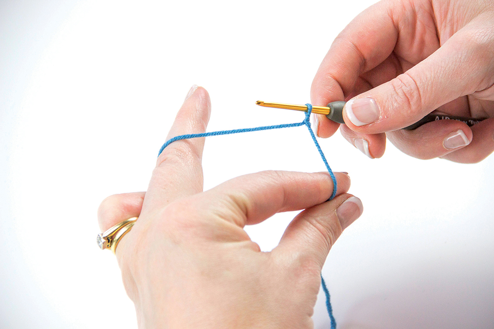

The Slip Knot and Holding Your Tools
To begin any crochet project, one must create a slip knot with their yarn. Doing so is quite simple, but messing up will lead to consequences. There are multiple ways of creating a slip knot, but I found this way to be quick and easy. Begin by creating a loop with your yarn around your finger, leaving about four inches at the end. Make sure you are holding the ball end of the yarn and leaving the free end by itself. Create an x shape with the yarn around your finger, with the ball end in front. Loop over your ball end over the loop you already have and pull the bottom loop over the top loop and remove the loop from your finger. Pull the loop tightly and place it on your hook. You know you did this correctly if you are able to tighten the loop by pulling the end yarn and loosen it by pulling the ball end. If this method is uncomfortable for you, check out some other methods.
With your slip knot on your hook, you are ready to start crocheting, but first you must figure out how to hold your yarn and hook. This is a lot more difficult than it looks, as the way you hold your materials is different for every crocheter. The most common hold is the knife hold. Like the name suggests, you hold the crochet hook exactly like you hold a small knife with your dominant hand. With your other hand, you hold the yarn. To hold the yarn, you take the ball yarn and wrap it around your pointer finger loosly. You can also first wrap it around your pinky and then your pointer finger for more control. You then hold the end of the yarn by pinching it with your thumb and middle finger. Make sure you are able to control the placement of the ball yarn with your pointer finger. Getting comfortable holding your tools takes a lot of practice, but once you get used to crocheting, it will be simple!